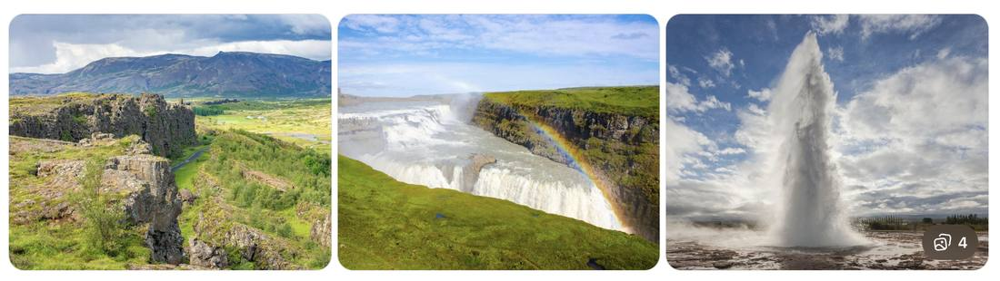
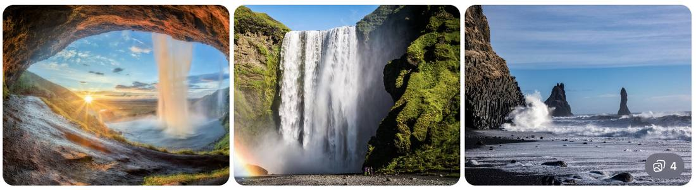
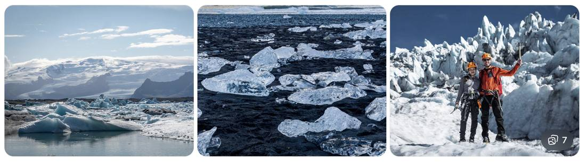
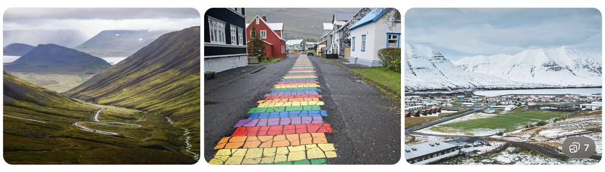
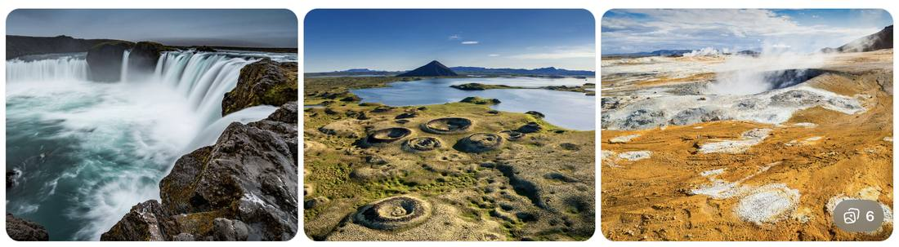
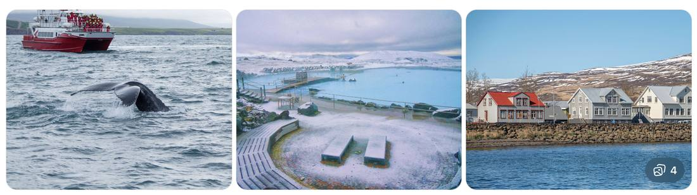
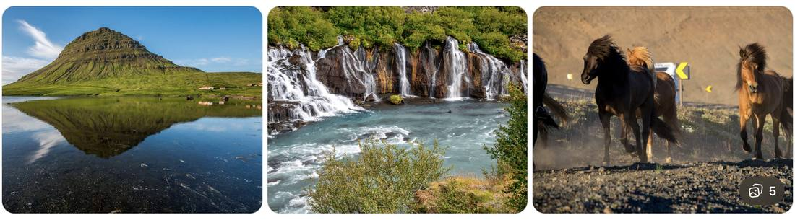

📍 День 1 — прилёт + Golden Circle
Прилёт → Keflavík International Airport → аренда машины
- 🥈Thingvellir National Park национальный парк
- 🥈Geysir гейзер (горячие источники, извержения)
- 🥈Gullfoss водопад
- 🥉 Kerið вулканический кратер
- Заселение в отель Hotel Kría или Hotel Katla

📍 День 2 — юг + ZIPLINE
- Выезд утром в 🥈Seljalandsfoss водопад (за ним можно пройти)
- 🥇 Skógafoss водопад
- 🥇 Reynisfjara пляж с чёрным песком
- 🥈Zipline (Mega Zipline) + 🥉Dyrhólaey мыс и смотровая площадка, летающие тупики
- Ночуем там же

📍 День 3 — ледник (главный день)
- 🥇 Выезд утром на ЛЕДНИК (купить тур) в Vatnajökull
- 🥇 Jökulsárlón ледниковая лагуна + 🥇Diamond Beach пляж с айсбергами
- Заселение в отель Fosshotel Glacier Lagoon или Milk Factory Guesthouse

📍 День 4 — восточные фьорды (опционально)
- Выезд утром в 🥈Seyðisfjörður городок во фьорде
- Заселение в отель Hotel Aldan или Lake Hotel Egilsstadir

📍 День 5 — север (природа вау)
- Выезд утром в 🥇Dettifoss самый мощный водопад
- 🥇Mývatn озеро + геотермальная зона
- 🥉Hverir геотермальное поле (кипящая земля)
- 🥈Goðafoss водопад
- Заселение в отель Fosshotel Mývatn или Hotel Laxá

📍 День 6 — отдых + КИТЫ (опционально, китов может и не быть)
- 🐋 Whale watching (09:00–12:00)
- 🧖 Mývatn Nature Baths
- Отдых

📍 День 7 — возвращение
- 🥉 Hraunfossar “лавовые” водопады
- Ночь в Рейкьявик или вылет домой